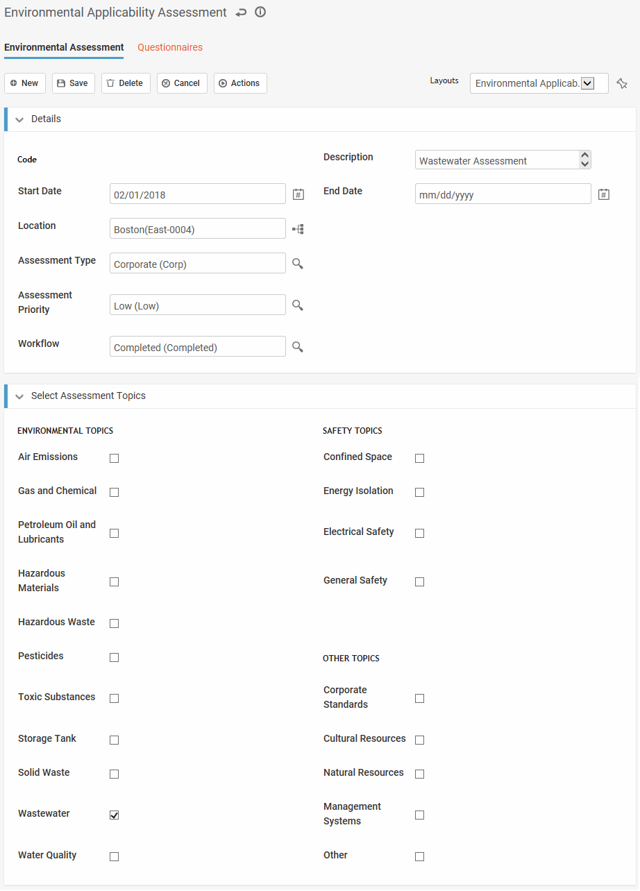

The Applicability Assessment module allows you to determine which federal, state/provincial/ local and corporate regulations apply to your organization or to a specific location, and generate audits for compliance with these regulations.
In the Safety or Environmental menu, click Applicability Assessment. You can view current assessments in a list or workflow swimlane view.
Any applicability assessments completed in ENHESA or RegScan for your location since the last refresh (see Viewing or Updating Third Party Regulatory Content) are added to the Applicability Assessment module.
ENHESA users: Several actions may be added to your layout to make the ENHESA workflow more intuitive, including:
- an action to import any new regulations and applicability assessments created in ENHESA for this location;
- an action to create an audit that includes the regulations and topics related to the questionnaire;
- an action to create a child assessment related to a parent assessment;
- fields to flag changes in applicability assessments that allow you to decide when to conduct major assessments vs periodic reassessments.
Contact Cority Support for assistance.
Open an existing assessment or click New.

Enter a Code and Description, and optionally a Start Date.
Select the Location. Note that this node in your organizational tree must be defined with at least one of State, County or Country attributes (see Using the Organizational Tree Builder).
Optionally select the Assessment Type and Assessment Priority, and change the Workflow status if appropriate.
Select the topics that you want to check for related regulatory content.
Click Save.
Appropriate questionnaires are generated and listed on the Questionnaires tab. Open and answer these to determine if the regulation is applicable. Questions may include advice to guide you. You can attach a document to each question if needed.
If you are revisiting a previous applicability assessment, choose Actions»Refresh Compliance Questionnaires to ensure you have the most current list from regScan or ENHESA. For more information, see Questionnaires.
For "Yes or No" type questions, you can also select "Not Applicable" as the response. For any question that you answer “Yes” to, the related regulation is added to the Applicable Regulations [Results] tab. These are also listed in the Legal and Other Requirements module (Safety) or Regulations module (Environmental).
If a response results in the creation of a Findings and Actions record, any comments for the response will be added in the new record's Finding Details field.
ENHESA: If there is a regulation URL associated with a response, the clickable URL will display as a popup message on the Questionnaire Question layout.
When you have answered all of the questionnaires, mark the assessment as Completed to generate the related compliance audit. If you don’t want to mark the assessment as Completed yet, you can manually generate an audit for one or more assessment: select the assessment(s) in the list view and choose Actions»Generate an Audit. Generated compliance audits are listed on the Related Compliance Audits [Results] tab and added to the Audits module.
Audit records generated from the Applicability Assessment will have an Audit Type of “COMP (Compliance)” and the Description will reflect that it was auto-created from Applicability Assessment. The Questionnaires tab on the audit record will display the same questionnaires from the assessment record, and the Related Legal Requirements tab will display all applicable legal requirements for the audit. All other tabs will be empty. Complete the audit to make recommendations or identify corrective actions to ensure compliance. For more information, see Working with Audits.
When an assessment is marked as Completed, a new one is created marked as Awaiting Reassessment.
To create another assessment with similar requirements but for a different location, select the first assessment and choose Actions»Clone Assessments. The clone will have the same values on the Assessment tab and the same questionnaires but no responses.